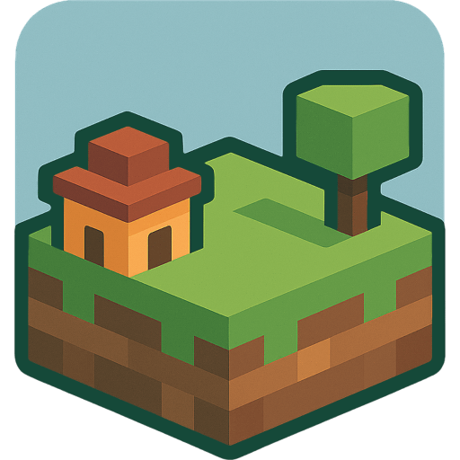

💾
Options
Options
💾 Save World
🕹️ Resume Game
🌍 New World
Build Any World, One Cube at a Time
A free and open source sandbox building game
that I originally built for my kids
.
▶️
Continue
Pick up where you left off
🕹️
New Game
Start a fresh world
💾
Load World
Import a saved file